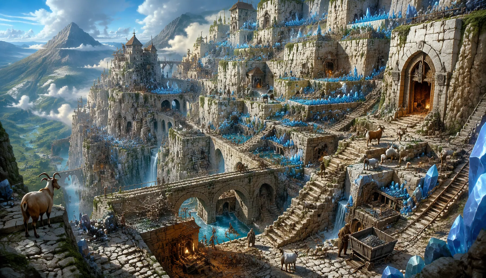

Mídia
Imagens e vídeos
Arte do mundo, as doze classes e capturas do build de desenvolvimento.
Vídeos
O jogo em movimento
Capturas do build pré-alfa. Tudo ainda vai mudar, e é para isso que serve um diário.
Pré-alfa
Pré-alfa
Pré-alfa


Capturas
Dentro do jogo
Telas do build de desenvolvimento.